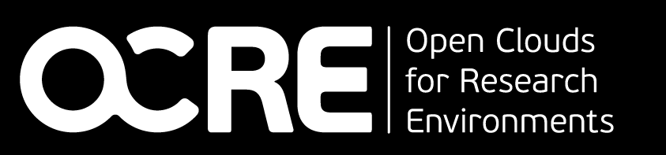
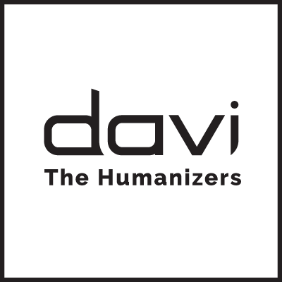
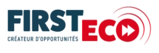

Outreach¶
This page presents my partnerships with companies and my public engagements. The list is not exhaustive.
Current partnerships¶

LAMAE LabCom¶
Joint laboratory on autonomous, empathetic multimodal agents. First demonstrators and first open model.
Read more
The goal of the LAMAE LabCom is to develop knowledge in the field of autonomous and empathetic multimodal agents, while implementing innovative, marketable technologies for creating digital humans in promising markets. We aim to build digital humans able to interact naturally with users, improving the long-term interaction experience by integrating the relational dimension, unlike chatbots designed only to answer questions. We aim to develop agents able to carry out sequences of complex tasks in a variety of domains, answer business questions, train people and keep their business knowledge up to date, while behaving proactively. The emphasis is on designing advanced natural language processing and computer vision algorithms to create personalised, immersive interactions.
After the first year, several demonstrators are operational: LAMAE-Intent for conversation memory, CARDIA, an explainable AI for cardiology teleconsultation, and a 3D agent (DAVI announcement).
First open model of the LabCom: laya-slotjudge-m46, a calibrated slot judge for conversational assistants in 46 languages (project website).
In partnership with DAVI.ai the humanizers
102-103¶
Decision support for workplace tender processes.
Read more
102-103 launched the first platform to help organisations manage, source and sustainably develop their workplace. It analyses business performance, simulates organisation costs, manages tender processes and supports collaboration between clients and suppliers.
Lexemia - 2026¶
Entrepreneurial project of Sarah Théroine, stemming from her PhD: assessing translation idiomaticity and producing training data.
Read more
Lexemia is the entrepreneurial project of Sarah Théroine, stemming from her PhD, which I co-supervised. I am involved in this project. Lexemia is developing two SaaS tools that assess the idiomatic and stylistic quality of a translation and automatically align untranslated multilingual corpora to produce training data. The project won the 7th edition of the i-PhD innovation competition (2026) and is supported by SATT Sayens and the DECA-BFC incubator.
Past partnerships¶

OCRE Google Cloud¶
Development of hybrid symbolic and subsymbolic AI on Google Cloud.
Read more
European OCRE Google Cloud project entitled DEEP LEARNING for GRAPHS, worth €250k of Google Cloud credit (2022), for the development of hybrid (symbolic and subsymbolic) AI (Vertex AI, Neo4J, Kubernetes, etc.).

DAVI The Humanizers¶
Hybrid AI producing text from knowledge graphs for conversational agents.
Read more
DAVI is a SaaS software publisher with expertise in AI, Affective Computing and human-machine interfaces. Its mission is to turn digital relationships into human relationships, and to make the relationship between machines and people, between information systems and their users, and between a company and its customers more human, smoother and more effective. To do so, DAVI brings together AI engineers, data scientists, NLP experts, 3D artists, UI-UX designers, psychologists, full-stack and software developers, and PhDs in cognitive engineering. This project aims to develop a hybrid AI able to produce natural language text from a knowledge graph for conversational agents.

Actualis, First Eco¶
Deep learning to identify and classify economic information sources.
Read more
Actualis specialises in producing and distributing press reviews. The results of research and development carried out in 2015 led to the creation of the FIRST ECO platform https://www.firsteco.fr/. This recommender system, developed under a collaboration contract between the company and the laboratory, now offers a personalised, customisable technical solution for accessing news. The eScope research and development project aims to produce a technical solution for machine learning and natural language processing based on deep neural networks (LSTM, Transformers) applied to sequential data. The outcome will be a process for identifying relevant information sources and classifying them with algorithms. This funding covers actions 1 and 4.
Media and talks¶
46 talks
2026
- AI Morning, Université Bourgogne Europe, Polytech Dijon, 15 October 2026: lecture on the history of AI and talk on R&D and commercialisation - linkConference
- RCF, Scientific programme, 7 October 2026, DijonMedia
- Representative of the French delegation at the Artificial Intelligence Week of MINRESI (SIA-MINRESI 2026), Yaoundé, Cameroon, 8-12 June 2026 - Journal du CamerounConference
- Hussam Ghanem presents our work on LAMAE-Mem, a memory architecture for LLM agents, at ISCS 2026, La Rochelle, June 2026 - linkConference
- Led the workshop on the CAIRE programme, study visit of the Interreg Europe ENAIBLER project, Dijon, 20 May 2026 - linkEvent
- Launch of the MDPI Topic AI Agents: Progress, Architecture, and Applications, of which I am a co-editor, April 2026. Submissions open until 30 September 2027Event
- Talk "Large-scale artificial intelligence literacy: feedback on WP2", CAIRE symposium at the Biennale internationale de l'éducation et de la formation, Cnam, Paris, April 2026 - linkConference
- Exchange day between ESEO and the ICB laboratory - linkEvent
- AI Day, CAIRE general assembly in Dijon, presentation of WP2, 11 March 2026 - linkEvent
- On the ESEO-ESTP campus, the Graduate Programme "From engineer to researcher: a gateway to research" started with a first session linkEvent
2025
- Official launch of the LAMAE LabCom in Dijon, July 2025 - linkEvent
- Meet-up "Boost your customer experience with AI!", AuxR_Green Lab Technopole, Auxerre LinkedInEvent
- Google interview: Accelerating AI Research with Google Cloud - linkMedia
- Member of the Bourgogne-Franche-Comté Region delegation of elected officials, researchers, regional decision-makers and European partners, which travelled to Brussels to discuss digital and artificial intelligence issues and project funding with the European institutions - linkEvent
- Annual congress of French university cities, New [cooperations] between higher education and research institutions and local authorities to imagine the city of tomorrow. Workshop of 8 October 2025: the stakes of having higher education and research institutions in a territory - linkConference
- On 3 July, the CESI campus in Lyon hosted the partners of the CAIRE project for a second General Assembly, bringing together, on site and online, those involved in citizen training in artificial intelligence. Presentation of WP2 progress - linkEvent
- Artificial Intelligence: real training needs! RCF radio, 24 March 2025 - RCFMedia
- B2B event Sayens x Medef 21, Generative and Emotional Artificial Intelligence, 25 April 2025, 11:30 am to 2 pm, Dijon - linkEvent
- Welcomed the Minister for Regional Planning and Decentralisation, François Rebsamen, and presented the CAIRE project during his visit to Dijon following the Paris summit - Le Bien Public - linkEvent
- Presentation of the CAIRE project - AEFMedia
- Fête de la Science 2025 - Lamae: when artificial intelligence learns empathyEvent
2024
- Mid-term meeting of the FORTHEM alliance, Sibiu, Romania, September 2024Event
- Proposal for a CIFRE PhD with the TIL laboratory on forensic analysis of social networks, DijInnovConnect, LADIJ Tech 2, March 2024 - linkEvent
- RCF, C LE MAG - The different kinds of AI, 6 November 2024, DijonMedia
- RCF, C LE MAG - Christophe CRUZ, teacher-researcher at the University of Burgundy, 9 January 2024, DijonMedia
2023
- The DECADE: innovation has talent, a round table on innovation with public research, with Philippe Genne, 29 June 2023, DijonRound table
- Round table - OSINT, Artificial Intelligence (ChatGPT): a revolution for information retrieval?, Documation & Data Intelligence Forum, 21-23 March 2023, Paris Porte de VersaillesRound table
2021
- Webinar - Digital twins and the semantic web: innovations for mountain regions, with Alps dev international - CCI Grenoble EcobizConference
2020
- Round table - IHEDN national session - Cybersecurity and digital sovereignty, 20 October 2020Round table
- DATA/SHS week, Friday 11 December, 9-11 am, "How to make a FAIR metropolis in a Smart city", programmeEvent
- Technical innovation morning "Artificial intelligence for industrial performance", 11 May 2020, linkConference
2019
- Conference on "Connected health devices & Artificial Intelligence", talk title: "Defining Artificial Intelligence", programmeConference
- Evening on "Agriculture 3.0: digital technology for agricultural sectors", talk title: "Data and AI", programmeConference
- Morning on "Data, a new strategic focus for companies", talk title: "Data and AI: current state and business prospects", Nicéphore Cité, 34 quai Saint Cosme, 71100 Chalon-sur-Saône, programmeConference
2017
- DataBFC conference, "The Big Data issue: definition and challenges", co-organised by OSU THETA and MSHE C. N. Ledoux, under the auspices of the University of Burgundy Franche-ComtéConference
- Round table «Les data scientists et leurs outils aux côtés du marketing : quels bénéfices inédits et inattendus apportent-ils ? », Salon CRM 2017, ParisExpo Porte de VersaillesRound table
- Wine & Digital Forum, Dijon, 2 June 2017Event
2016
- Round table of the 1st Datathon in Bourgogne Franche-Comté - Nicéphore CitéRound table
2015
- Round table ahead of Researchers' Night, MSH DijonRound table
2014
- Research within everyone's reach, IUT Dijon-Auxerre (1st, 2nd and 3rd editions)Event
- Multidisciplinary Scientific Day, Statistical Processing of Spatial Data, MSH DijonConference
- Interoperability and Innovation Day J2I organised by ENSG, Marne-la-ValléeConference
- SEMWEB.PRO conference organised by Logilab, ParisConference
- European Researchers' Night, MSH DijonEvent
2013
- Young Researchers and Business ForumEvent
- Round table opening the innovation month at the regional innovation centre in BurgundyRound table